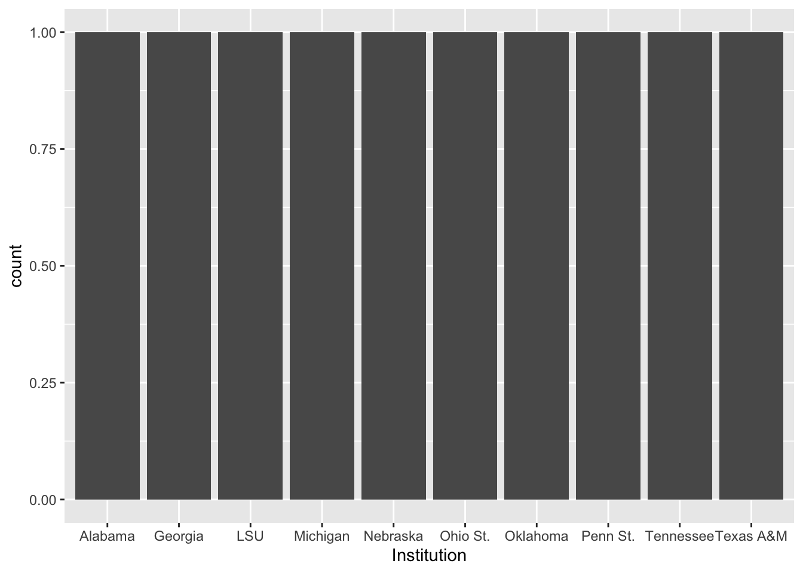
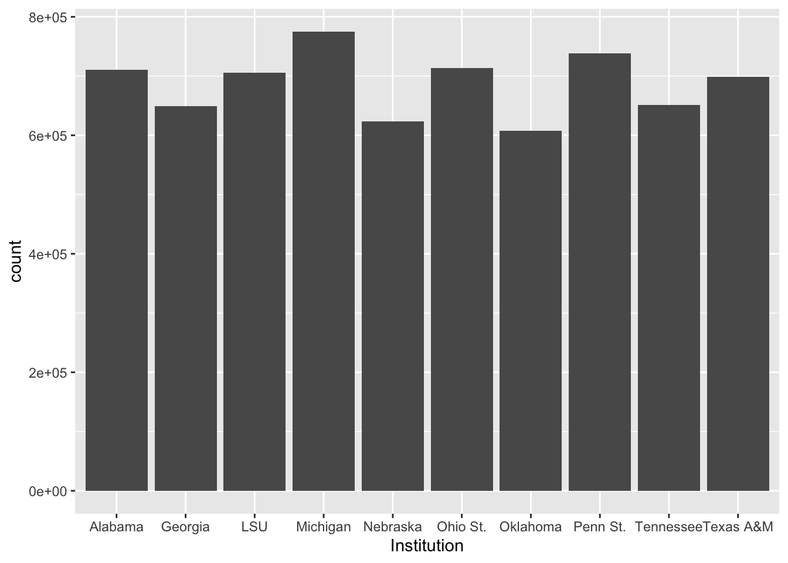
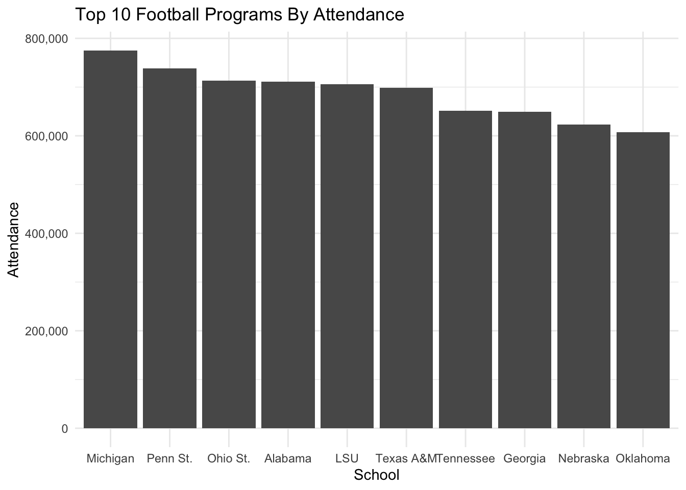

Chapter 13 Intro to ggplot
With ggplot2, we dive into the world of programmatic data visualization. The ggplot2 library implements something called the grammar of graphics. The main concepts are:
- aesthetics - which in this case means the data which we are going to plot
- geometries - which means the shape the data is going to take
- scales - which means any transformations we might make on the data
- facets - which means how we might graph many elements of the same dataset in the same space
- layers - which means how we might lay multiple geometries over top of each other to reveal new information.
Hadley Wickam, who is behind all of the libaries we have used in this course to date, wrote about his layered grammar of graphics in this 2009 paper that is worth your time to read.
Here are some ggplot2 resources you’ll want to keep handy:
Let’s dive in using data we’ve already seen before – football attendance. This workflow will represent a clear picture of what your work in this class will be like for much of the rest of the semester. One way to think of this workflow is that your R Notebook is now your digital sketchbook, where you will try different types of visualizations to find ones that work. Then, you will export your work into a program like Illustrator to finish the work.
To begin, we’ll import the ggplot2 and dplyr libraries. We’ll read in the data, then create a new dataframe that represents our attendance data, similar to what we’ve done before.
library(tidyverse)attendance <- read_csv('data/attendance.csv')## Parsed with column specification:
## cols(
## Institution = col_character(),
## Conference = col_character(),
## `2013` = col_double(),
## `2014` = col_double(),
## `2015` = col_double(),
## `2016` = col_double(),
## `2017` = col_double(),
## `2018` = col_double()
## )First, let’s get a top 10 list by announced attendance this last season. We’ll use the same tricks we used in the filtering assignment.
attendance %>% arrange(desc(`2018`)) %>% top_n(10) %>% select(Institution, `2018`)## Selecting by 2018## # A tibble: 10 x 2
## Institution `2018`
## <chr> <dbl>
## 1 Michigan 775156
## 2 Penn St. 738396
## 3 Ohio St. 713630
## 4 Alabama 710931
## 5 LSU 705733
## 6 Texas A&M 698908
## 7 Tennessee 650887
## 8 Georgia 649222
## 9 Nebraska 623240
## 10 Oklahoma 607146That looks good, so let’s save it to a new data frame and use that data frame instead going forward.
top10 <- attendance %>% arrange(desc(`2018`)) %>% top_n(10) %>% select(Institution, `2018`)## Selecting by 2018The easiest thing we can do is create a simple bar chart of our data. We could, for instance, create a bar chart of the total attendance. To do that, we simply tell ggplot2 what our dataset is, what element of the data we want to make the bar chart out of (which is the aesthetic), and the geometry type (which is the geom). It looks like this:
ggplot(top10, aes(x=Institution)) + geom_bar()
Note: attendace is our data, aes means aesthetics, x=Institution explicitly tells ggplot2 that our x value – our horizontal value – is the Instituition field from the data, and then we add on the geom_bar() as the geometry. And what do we get when we run that?
ggplot(top10, aes(x=Institution)) + geom_bar()
We get … weirdness. We expected to see bars of different sizes, but we get all with a count of 1. What gives? Well, this is the default behavior. What we have here is something called a histogram, where ggplot2 helpfully counted up the number of times the Institution appears and counted them up. Since we only have one record per Institution, the count is always 1. How do we fix this? By adding weight to our aesthetic.
ggplot(top10, aes(x=Institution, weight=`2018`)) + geom_bar()
Closer. But … what order is that in? And what happened to our count numbers on the left? Why are they in scientific notation?
Let’s deal with the ordering first. ggplot2’s default behavior is to sort the data by the x axis variable. So it’s in alphabetical order. To change that, we have to reorder it. With reorder, we first have to tell ggplot what we are reordering, and then we have to tell it HOW we are reordering it. So it’s reorder(FIELD, SORTFIELD).
ggplot(top10, aes(x=reorder(Institution, `2018`), weight=`2018`)) + geom_bar()
Better. We can argue about if the right order is smallest to largest or largest to smallest. But this gets us close. By the way, to sort it largest to smallest, put a negative sign in front of the sort field.
ggplot(top10, aes(x=reorder(Institution, -`2018`), weight=`2018`)) + geom_bar()
13.1 Scales
To fix the axis labels, we need try one of the other main elements of the ggplot2 library, which is transform a scale. More often that not, that means doing something like putting it on a logarithmic scale or soem other kind of transformation. In this case, we’re just changing how it’s represented. The default in ggplot2 for large values is to express them as scientific notation. Rarely ever is that useful in our line of work. So we have to transform them into human readable numbers.
The easiest way to do this is to use a library called scales and it’s already installed.
library(scales)##
## Attaching package: 'scales'## The following object is masked from 'package:purrr':
##
## discard## The following object is masked from 'package:readr':
##
## col_factorTo alter the scale, we add a piece to our plot with + and we tell it which scale is getting altered and what kind of data it is. In our case, our Y axis is what is needing to be altered, and it’s continuous data (meaning it can be any number between x and y, vs discrete data which are categorical). So we need to add scale_y_continuous and the information we want to pass it is to alter the labels with a function called comma.
ggplot(top10, aes(x=reorder(Institution, -`2018`), weight=`2018`)) + geom_bar() + scale_y_continuous(labels=comma)
Better.
13.2 Styling
We are going to spend a lot more time on styling, but let’s add some simple labels to this with a new bit called labs which is short for labels.
ggplot(top10, aes(x=reorder(Institution, -`2018`), weight=`2018`)) + geom_bar() + scale_y_continuous(labels=comma) + labs(title="Top 10 Football Programs By Attendance", x="School", y="Attendance")The library has lots and lots of ways to alter the styling – we can programmatically control nearly every part of the look and feel of the chart. One simple way is to apply themes in the library already. We do that the same way we’ve done other things – we add them. Here’s the light theme.
ggplot(top10, aes(x=reorder(Institution, -`2018`), weight=`2018`)) + geom_bar() + scale_y_continuous(labels=comma) + labs(title="Top 10 Football Programs By Attendance", x="School", y="Attendance") + theme_light()
Or the minimal theme:
ggplot(top10, aes(x=reorder(Institution, -`2018`), weight=`2018`)) + geom_bar() + scale_y_continuous(labels=comma) + labs(title="Top 10 Football Programs By Attendance", x="School", y="Attendance") + theme_minimal()
Later on, we’ll write our own themes. For now, the built in ones will get us closer to something that looks good.
13.3 One last trick: coord flip
Sometimes, we don’t want vertical bars. Maybe we think this would look better horizontal. How do we do that? By adding coord_flip() to our code. It does what it says – it inverts the coordinates of the figures.
ggplot(top10, aes(x=reorder(Institution, -`2018`), weight=`2018`)) + geom_bar() + scale_y_continuous(labels=comma) + labs(title="Top 10 Football Programs By Attendance", x="School", y="Attendance") + theme_minimal() + coord_flip()